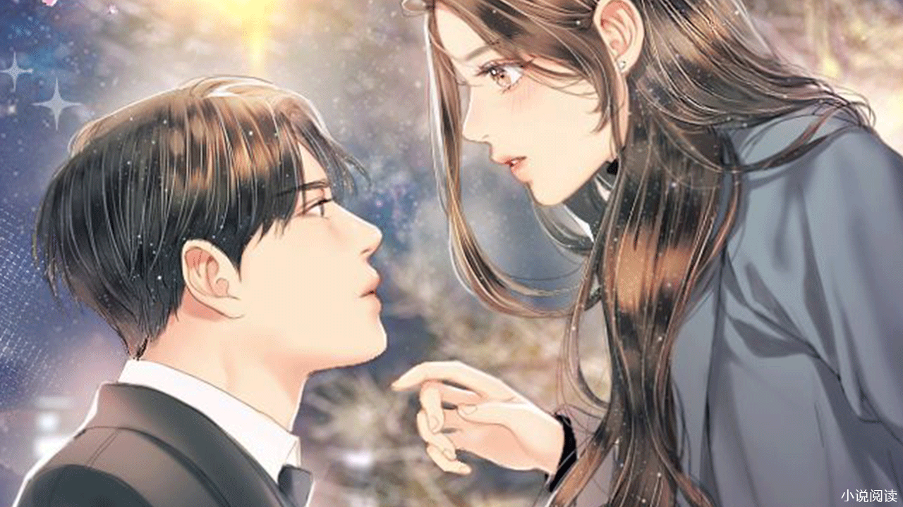

第1章 我有女儿了

月圆之夜，泰山之巅。
一道惊世雷霆从天而降，令得泰山方圆十里之内尽数沐浴在雷光之中，一时之间，毁天灭地，寸草不生。
“何方高人在此渡劫？”
“天现异象，必有妖孽降世！”
华国当世绝巅强者相顾骇然，待得雷光散去后才敢前往泰山查探，结果却是一无所获，怅惘而归。
……
没有人知道的是，自泰山奇观消失的三日之后。
天南省林城市，金阳小区。
一个青年站在小区门口怔怔出神，令得过往行人纷纷侧目，盖因青年衣衫褴褛，披头散发，仿佛是从山里走出来的野人一般。
“五年了！”
“金阳小区，我叶辰终于回来了！”
叶辰默默注视着眼前的熟悉而又陌生的场景，身形轻颤，神情似悲似喜，对于路人诧异的目光视而不见。
没有人能够理解他此时的心情。
五年前他被人捆住手脚后沉入波澜江之中，本以为必死无疑，谁曾想到他在江底融合了一个神奇瓶子，等到醒来后，叶辰发现自己竟然穿越到了一个妖魔横行，仙神林立的修真世界。
凭借着这个瓶子，叶辰花了三千年时光从一介凡人修炼到了盖世仙尊之境，号称南狂仙尊，并且创立东方天庭，被万族共尊为叶天帝，三千年里，他狂踩万族天骄，横推宇宙一切。
却不成想被自己最信任的弟子宇文轩出卖，为了谋夺天帝之位，宇文轩联合妖界，魔界，佛界入侵，那一战异常凄烈，叶辰崩碎了帝兵天帝剑，打碎了九品仙器夜魔战甲，最终被打入虚空裂缝之中。
而这条虚空裂缝竟然通往地球，三天前叶辰自泰山醒来，才得知自己消失已经有五年了。
他在这个世上有父母，甚至是还有一个倾国倾城的女朋友。
也不知道爸妈怎么样了。
还有她，苏雨涵！
五年过去了，她是否还……
叶辰深吸了口气，好不容易整理好情绪后便走进了小区。
金阳小区以前是个城中村，五年前碰上修建火电厂，附近的居民纷纷得到了拆迁补偿，要么给钱，要么给房，叶辰家里也得了一套房。
不多时，叶辰循着记忆便到了自家楼下，远远的就看见一个白发苍苍的中年妇女驼着背正在门口扫水。
叶辰在距离她不到十米的位置停了下来，声音无比沙哑。
“妈……”
中年妇女下意识的抬头看向叶辰，先是一愣，随后她手中的扫把啪嗒一声掉在了地上，不可置信的揉了揉眼：“小……小辰？”
正是叶辰的母亲吴兰。
“噗通！”
叶辰重重的跪在了水地里，一步一步朝着吴兰跪了过去，鼻子一阵发酸：“妈，儿不孝，让你们为我担心了五年！”
正所谓父母在，不远游，游必有方！
可以想象，在他消失的五年里，父母会有多么着急和担心。
“小辰，你怎么才回来啊！”
吴兰也认出了叶辰，母子俩抱头痛哭：“你这个孩子，去了什么地方也不给家里打个电话，生不见人，死不见尸，你知道我和你爸这些年有多难过吗……”
“妈，儿子去了一个很遥远的地方，无法和你们联系，也没有一天不想你们的。”叶辰红着眼眶道。
“回来了就好，回来了就好啊，过去的都不提了！”
“走，进屋去，妈现在就给你爸打电话，他知道了一定会很高兴！”
吴兰抹了抹泪，拉着叶辰就进了自己家里，然后便给叶辰的父亲打电话报告喜讯，叶辰默默打量着屋子。
这时，一个四五岁的小女孩儿自屋外跑了进来，哇哇大哭：“奶奶，隔壁的小虎又欺负我了。”
小女孩儿头上扎着两根朝天辫儿，露出两截莲藕般的胳膊，长长的睫毛扑朔个不停，远远看上去就如同一个精致的瓷娃娃，只不过那张小脸儿此刻却是鼓着腮帮子，一脸委屈。
奶奶？
叶辰先是一愣，继而不可置信的看着小女孩儿。
奶奶……
她……她是我的……
小女孩儿这才注意到叶辰，止住哭声后下意识的躲到吴兰身后，怯生生的探出一个脑袋偷看他。
叶辰急忙看向吴兰，心潮起伏不已：“妈，她……她是……”
“嗯，萌萌是你和雨涵的孩子。”
吴兰点了点头，摸着小家伙的手笑道：“你消失之后的几天，雨涵就检查出有了一个月，之后就生下了萌萌，可是这丫头……”
叶辰却是再也听不进老妈的话了，下意识的朝着小家伙走了过去：“萌萌？我的女儿？雨涵给我生的贴心小棉袄？”
他没想到自己消失五年后，不但有了女儿，而且还这么大了。
一开始他有些不信，准确的说是无法接受。
可随即猛然想起，自己消失的一个月前碰过雨涵一次，那也是最后一次，还是雨涵主动的，当时俩人纯属突然性起，并没有做安全措施。
再者小家伙的容貌和自己有四五分相似。
我有女儿了！
哈哈哈，我叶天帝，我南狂仙尊有女儿了！
初为人父的情绪涌上心头，叶辰恨不得将小家伙抱在怀里好好看看。
奈何小家伙再次躲到了吴兰身后，紧张不安的拽着吴兰的袖子，显然是有些怕叶辰。
“萌萌，这是爸爸啊，你不是一直嚷着要爸爸吗？”吴兰一脸慈祥的道。
小家伙不知道哪里来的勇气，满脸通红的道：“他不是我爸爸，我没有爸爸！”
“傻孩子，你没有爸爸，那你是怎么生出来的？”吴兰哭笑不得。
小家伙道：“我是妈妈生出来的。”
吴兰顿时被她这句话给气乐了。
叶辰却是笑不出来，取而代之的是无尽的自责，后悔。
也是，自己消失五年，女儿出生到现在自己都没看过一眼，甚至是没有尽过一天当爸爸的责任。
因此她不认自己也很正常。
吴兰把脸一板：“萌萌乖，他真是你爸爸，快，叫爸爸。”
“我不！”萌萌一脸硬气。
吴兰佯怒伸手就要打他。
叶辰急忙拦住：“妈，算了，萌萌不想叫就算了吧。”
吴兰叹了一口气：“哎，你应该还没吃饭吧？妈这就去给你做，你陪萌萌玩儿。”
她走后，父女俩大眼瞪小眼儿的，叶辰从脸上挤出一抹笑容，叫道：“你叫萌萌？”
小家伙重重的哼了一声，不给他好脸色看，然后径直走到沙发上坐了下来，从书包里拿出一个方格本，神情专注的写着作业。
叶辰轻轻凑了过去，小家伙急忙用手挡住，叶辰也不介意，反而笑着问道：“萌萌，告诉我，你叫什么名字啊？”
小家伙很不想搭理他，不过还是奶声奶气的道：“我叫叶萌萌！”
叶萌萌！
姓叶！
叶辰心脏猛地一跳，强忍住将她抱进怀里的冲动，笑道：“叶萌萌，好名字，是妈妈给你取的吗？妈妈呢？”
他也有些疑惑，进门到现在都没看到苏雨涵，难道是上班去了？
小家伙抬头瞪了他一眼，一脸木然：“妈妈被坏人抓走了！”
被坏人抓走了？
叶辰顿时一惊，正要再问什么的时候，只听到啪嗒一声。
小家伙手中的笔顿时掉落在地上，而她整个人也跟着倒在了沙发上，用手抱着头满脸痛苦：“疼，疼，奶奶，萌萌好疼呀……”
“你怎么了！”叶辰急忙把她抱在怀里，惊骇的发现小家伙身上起了很多红点，一个劲的流着鼻血。
叶辰手忙脚乱的给她止血：“萌萌，你没事吧，别吓爸爸啊！”
吴兰披着围裙从厨房里面走了出来，看到这一幕后，急忙从柜子里拿出一瓶药倒了几颗给她吃下去。
小家伙的病情才得到了缓解。
看着昏睡过去的小家伙，叶辰非常难受：“妈，萌萌她？”
好不容易才看到女儿，他真的不希望女儿有半点意外。
吴兰叹了口气，带着哭腔：“萌萌她，得了白血病！”
叶辰脸上的笑容顿时一僵。
第2章 你的嘴好臭
白血病。
是一类造血干细胞恶性克隆性的疾病，在前几年又叫不治之症，中医上将其定义为五脉不畅，血气僵化，癌毒入骨。
虽说现在医疗发达，可以通过化疗和骨髓移植进行治愈，然而化疗的过程非常痛苦，做骨髓移植动辄就要三五十万。
三五十万，对于叶辰的父母来说，相当于一辈子的积蓄了。
“妈，这是什么时候的事？”叶辰深吸了一口气问道。
他刚看到女儿，就听见这样的一个噩耗。
吴兰掩面落泪：“在你消失后的第四年，也就是萌萌三岁的时候身体突然发热，还流鼻血，我和你爸就带她去医院检查，结果发现是白血病……
我们去了无数医院，萌萌的病情都没有得到控制，反而开始恶化，医生说要么做骨髓移植，要么化疗。
这两条路都是要我们命的啊。
萌萌才这么小，怎么可能承受得了化疗的痛苦，可是做骨髓移植，需要几十万块，我和你爸真的是无能为力。
没办法之下，我和你爸只能通过药物来暂时缓解她的病情，光是这个药，也要1000一瓶，这一年下来，家里已经花花光了积蓄……”
提到伤心处，吴兰一脸痛苦与自责。
叶辰将老妈手里的那瓶药拿过来一看，只见上面写着“格列卫”三个字，他下意识的问道：“那雨涵呢？”
吴兰抹了一把泪，面色有些不自然：“雨涵她……”
“雨涵她出什么事了？”叶辰面色一变，似乎是意识到了什么。
吴兰犹豫了下，道：“雨涵这丫头在萌萌刚满两岁的时候就被苏家强行带回去了！”
叶辰闻言猛地一抬头，眸子深处闪过一抹厉色。
苏家！
当年叶辰是在大学里和苏雨涵认识的，那时候的苏雨涵贵为校花，追求者甚多，却偏偏看中了家境平凡的叶辰，俩人相恋之后，叶辰才真正知晓苏雨涵的身份。
燕京豪门苏家之女！
什么是豪门？
用当年那位将叶辰踩在地上，居高临下的俯视着他的青年的话来说就是：“古有癞蛤蟆想吃天鹅肉，可在我苏家眼里，你们这些贱民连癞蛤蟆都不如，顶多算是一只蝼蚁，如果不是因为雨涵，我苏家甚至都不屑于踩你，既然是蝼蚁，那就要有做蝼蚁的觉悟，不要有任何不切实际的幻想，否则，我保证你会死得很惨！”
事后叶辰不甘，暗自发誓要做出一番成绩证明自己，结果他在下班回来的路上被人打晕，然后被捆住手脚沉入波澜江之中。
不用想也知道是苏家所为！
念及至此，叶辰缓缓握拳，嘴角泛出一抹冷笑：“苏家，拜你所赐，我叶辰落江不死，反而携天帝之威重回都市，等着吧，我会让你们知晓什么才是蝼蚁，什么才叫恐惧！”
眼见叶辰不说话，吴兰还以为他在生气，急忙解释道：“小辰，你也别怪雨涵，在你消失后，我和你爸都不忍心看她受苦，让她把孩子打掉回家去。
可这丫头却很固执的说要等你回来，还挺着大肚子做家务，去上班，萌萌生下来后都是她一把带到两岁的，后来苏家来人，她只能跟着回去了。”
“妈，我知道，这些年苦了她了。”叶辰笑了笑，只是眸子深处的厉色却是越聚越多。
以苏雨涵的性子，不到万不得已又怎么会离开女儿萌萌，想必苏家在其中用了诸多不光彩的手段，比如用叶辰的父母来威胁她。
吴兰抹着泪道：“雨涵去了之后就没回来过，甚至无法跟我和你爸联系，期间肯定受了不少苦，萌萌被检查出白血病之后，你爸去燕京找她，结果被苏家的人赶了出来，还被打折了一条腿。”
“总有一天我会亲自去将雨涵接回来，我保证，这一天不会太远。”叶辰笑容冷冽，心中的愤怒已经上升到了极点。
萌萌得了白血病的事情，苏家又如何会让苏雨涵知道，否则苏雨涵铁定会为之疯狂。
似乎是察觉到了他的想法，吴兰脸色微变：“你别乱来，苏家那样的存在我们惹不起，爸妈老了，这辈子唯一的希望就是你和萌萌健健康康，只是萌萌……”
“妈，您放心，我消失的几年里学过一些医术，萌萌的病我有办法治，不过还需要一段时间。”叶辰笑着安慰道。
白血病在普通人看来无异于绝症，可在他南狂仙尊眼里，只需要一粒脱胎丹便可帮助萌萌脱胎换骨，重塑气血。
唯一困难的是，脱胎丹需要筑基期修为方可炼制，而他体内的灵力已经枯竭了，只要有足够的灵气，哪怕一夜之间重回仙尊之境也未必不可能。
即便如此，他的肉身依旧是仙尊级别的。
看来得尽快想办法恢复修为了，哪怕恢复一点也行，到时候他就能炼制气血丹帮萌萌压制病情，效果比什么“格列卫”要强一百倍。
叶辰暗暗打定主意。
吴兰叹了口气没说什么，只当是安慰话。
而就在这时，屋外响起一阵争吵声，吴兰愣了愣，下意识起身往门口走去：“你爸回来了！”
叶辰急忙跟上。
等到母女俩走到屋外时，便看见一个满脸皱纹，头戴工帽的中年男子被一群人围在中间，领头的是一个染着黄发的青年。
中年男子正是叶辰的父亲叶海。
黄发青年嘴里嚼着口香糖，凶神恶煞的看着叶海：“姓叶的，你躲了哥几个好几天了，这下终于我被我逮着了吧？今天你要是再拿不出钱来，别怪我鲍坤翻脸不认人。”
听到鲍坤两个字，周围那些想要上前劝架的人脸色剧烈一变，急忙退到了远处，生怕牵连到自己。
“我现在没钱，能不能再宽限一段时间？”叶海满脸通红的道。
“没钱？那行，留一根手指当利息吧！”
鲍坤猛地将口香糖吐了出去，从身后接过一把剪刀，面色狰狞的道：“把这老东西的手给我按着，老子今天就让他长个记性！”
话音刚落，他身后的几人顿时一把抱住了叶海。
“都给我住手！”
看到这一幕，叶辰目呲欲裂，示意老妈站着别动，然后大吼一声走了过去。
众人顿时一惊，不由得看向他。
鲍坤的脸色当即沉了下来：“草，哪里来的煞笔，连老子的事情也敢管？再不滚开连你一起打！”
“你没资格知道我是谁！”
叶辰无比淡漠的看了他一眼，这才对叶海笑道：“爸！”
叶海愣了愣，继而难以置信的看着叶辰道：“你……你是小辰？”
“嗯，爸，到底是怎么回事？”叶辰点了点头，继而目光无比冰冷的看向鲍坤等人。
叶海张了张嘴，一旁的鲍坤打断道：“你就是这个老东西的儿子？你来得正好，这个老东西欠了我们五万块钱，赶紧替他还了，再磕几个响头，哥几个就……”
“啪！”
他的话还没说完，叶辰抬手就给了他一耳光：“你的嘴好臭！还有，我问话的时候，还轮不到你插嘴！”
这一巴掌打得异常响亮。
周围一片死寂，每个人都瞪大了眼睛不可置信的看着叶辰，就连身为当事人的叶海也惊呆了。
“你……你他妈敢打我？”鲍坤硬是被这一巴掌给打懵逼了，愣了几秒才反应过来，捂着脸呆呆的看着叶辰。
“啪！”
又是一巴掌扇来，鲍坤的另一边脸随之高高肿起。
“聒噪！”
叶辰缓缓收回手，神情无比淡漠！
完了，事情闹大了！
叶海的心顿时沉到了谷底。
果然，一道夹杂着愤怒和羞辱的咆哮声随即响起:“都给我上，弄死这小子，我要他死！！！”
第3章 滚出来受死
鲍坤无比怨毒的挥手。
站在他身旁的七八个大汉顿时一拥而上，齐齐朝着叶辰扑了过来，每个人的脸上都带着凌然的笑意。
看到这一幕，一旁围观的不少人纷纷下意识的闭上了眼睛，面露不忍之色，在他们看来，对方人多势众，叶辰死定了。
远处的吴兰吓得差点没晕过去：“小辰！”
“坤哥，求求你，让你的人住手，钱我给，要多少都给！”叶海急忙拦在叶辰面前，身形颤抖不已，就差给鲍坤跪了下去。
儿子消失五年，如今好不容易才回来，孙女又得了白血病，如果两人都出了事的话，他们老两口也活不下去了。
“太迟了，连这个老东西给我一起揍！”鲍坤冷冷一笑，嘴角尽是残忍的弧度。
敢打我？
真是不知道死字怎么写！
一时间，七八根棍子齐齐砸向叶海。
叶辰眼疾手快一把将叶海拉到自己身后，然后抬手一档，那砸过来的七八根棍子顿时应声而断，而叶辰一点事都没有。
几人瞪大了眼睛，下意识的看了看手中断成两截的棍子，又看了看叶辰，不由得惊骇无比。
这……这他妈还是人吗？
鲍坤脸上的笑容为之一僵，旋即咆哮道：“都他妈愣着做什么？老子就不信这小子是铜头铁骨！”
几人一想也是，咽了口唾沫后，悍不畏死的挥着拳头再次冲向叶辰，似乎是想将他碎尸万段。
土鸡瓦狗之辈！
叶辰轻蔑一笑，虽说他暂时没有了修为，可毕竟仙尊之身，就连虚空裂缝也没能将他的肉体毁灭，身体素质岂是常人能比！
他向前迈出一步，不退反进，凭借着纯粹的肉身力量撞向人群，随即响起一连串的惨叫声，但凡是被他撞到的，无不是倒飞出去躺在地上哀嚎连连。
一时间，现场一片死寂！
每个人都瞪大了眼睛不可置信的看着叶辰。
这怎么可能！
鲍坤打了个激灵，一股寒意顿时涌上心头，继而他似乎是想到了什么，脸上一抹闪过狠色，伸手从身上掏出一把匕首就刺向叶辰。
“给我去死！”
叶辰一脚踹出，鲍坤就跟虾米一般重重跪倒在地上，随后单手掐住他的脖子，将他整个人提在了半空之中，神情淡漠：“你，知道死字怎么写吗？”
“我……我是豹哥林泰的人，你……你敢动我，不会有好下场的！”鲍坤在空中胡乱的蹬着腿，整张脸憋成了猪肝色。
在这一刻，死亡的感觉涌上心头，他终于开始恐惧了！
因为眼前的青年看向自己的目光之中满是杀意！
听到豹哥林泰四个字，围观的人群一阵哗然。
不为别的，只因为林泰是天南市的地下王者，为人心狠手辣，背景通天，别说是他们这些普通百姓，就是上面也拿他没办法。
“小辰，快放了他，不要冲动！”叶海面色一变，急忙跺脚。
鲍坤原本绝望的心再次燃起一丝希望，随即演变成狞笑，即便是被叶辰掐住了脖子也在肆意的笑。
怕了！
这父子俩怕了！
你再能打又如何？一听到豹哥的名字还不是得下跪！
叶辰嘴角泛出一抹讥诮：“林泰是吧？行，我今天饶你不死，不过出来混总是要还的，断你一臂，以作惩戒！”
话音落下。
只听到咔嚓一声，鲍坤掉在地上捂着右臂惨叫不已：“啊啊啊，我……我的手断了，我的手断了！”
“之所以饶你一命，是想让你回去告诉林泰，让他天黑之前亲自上门请罪，如若不然，后果自负！”叶辰居高临下的俯视着他，不带一丝情感。
“还不快滚！！！”
一声怒吼之下，躺在地上的七八个大汉急忙起身扶着鲍坤跟逃似的离开了，生怕叶辰反悔。
围观的人目光呆滞的看着叶辰，眼中的震撼久久不散，完全没想到叶辰凭借一己之力竟然打跑了鲍坤一干人等。
“小辰！”
一道哭腔传来，吴兰快步走了过来上上下下打量着叶辰：“小辰，你没事吧？有没有伤到哪里？”
“妈，我没事。”
叶辰笑了笑，看了一眼围观的人群后，拉着脑袋发蒙的叶海就回到了屋里关上门，这才问道：“爸，到底是怎么回事？”
他之前之所以率先出手，是因为鲍坤一口一个老东西的辱骂自己的父亲，甚至是还想要叶海向他下跪。
就冲这一点，但凡是任何一个人子都无法直视。
叶海反应过来之后，苦涩一笑：“为了给萌萌买药，家里的积蓄早在两个月前就花光了，爸没用，跟亲戚又借不到，后来听一个朋友介绍说有人放贷款，不过利息要比银行高一点。
当时萌萌的药快断了，爸一咬牙就跟那人借了一万，约定半年后还一万二，谁知道不到一个月对方就让我还，而且要还五万，说是其中四万是利息……”
高利贷！
叶辰面色一凝，算是清楚了事情的来龙去脉。
高利贷比毒品恐怖万分，利背利，债滚债，哪怕是身家过亿也扛不住这玩意儿，而鲍坤等人想来也是知道叶辰的家庭状况，才把目标叮向了自己的父亲。
“你个老糊涂啊，家里都什么情况了，还去借高利贷，是想把我们逼死么？”吴兰指着叶海就是一顿破口大骂。
叶海满脸惭愧：“我也是没法子了！”
眼见父母要吵起来了，叶辰急忙劝道：“爸，妈，没事，好在的是借得不多，回头我去还上就行了。”
嘴上虽然这么说，不过他内心却是冷笑连连。
凭本事借的钱为什么要还？
而且还是高利贷！
“哎，也只能这样了。”叶海叹了一口气。
吴兰又抱怨了几句才去厨房做饭，叶辰父子俩坐在沙发上聊了好长一段时间，大体上是解释自己这些年去了哪里，为什么不和家里联系之类的。
为了打发父母的疑心，叶辰只得借口自己被国家选为特殊工作人员，这些年一直在秘密基地训练，和外界联系不了。
好在的是叶海也没仔细追问，父子俩又聊了一会儿，直到萌萌这个小家伙醒来后，两人的注意力才转移到了她身上。
“爷爷，您下班回来啦！”
小家伙满脸兴奋的扑到了叶海怀里，给叶海边敲背边懂事的道：“爷爷，您辛苦了，萌萌长大了一定好好挣钱孝顺您。”
叶海乐得嘴都合不拢，只是眼角却是带着泪意，看得一旁的叶辰羡慕不已，因为小家伙根本不搭理他。
不过他也不急，相信父女俩经过长时间的相处之后，萌萌一定会接纳自己这个爸爸的。
之后吴兰将饭菜端了出来，一家人吃得其乐融融，吃完饭的时候天已经黑了，萌萌缩在吴兰怀里早早的便睡了过去。
等到父母都相继睡下后，叶辰才回到以前苏雨涵住过的房间，略带回忆的看了看苏雨涵留下的旧物，当即盘膝坐在床上，运转《人皇经》默默感应着天地间稀薄的灵气。
人皇经，人皇，又称天子，代天刑罚，口含天宪，有统御四海之能，主宰万物之责，浩瀚乾坤，唯我独尊！
他之前贵为一代天帝，自然相当于众生之皇。
时间快速推移，两个时辰之后，一直久坐不动的叶辰身子忽然剧烈的颤抖了下，随即从他体表散发出一道淡金色的气体。
叶辰缓缓睁开双眼，感应了一番身体之后，嘴角含笑：“总算是踏入修真门槛聚灵境初期了，《人皇经》不愧是集仙界之大成！”
《人皇经》是叶辰前世登临天帝之位后融合天庭功法参悟出来的，集仙界所有神通法术之大成，能够修炼出人皇之气。
人皇之气，乃万气之皇！
只是当时他已经修炼了别的功法，唯有将其传授给弟子宇文轩，没想到由此滋生了宇文轩的谋逆之心。
“既然突破了，那么第一件要着手的事情便是给萌萌炼制气血丹，这样才能暂时压制她的病情！”
叶辰缓缓起身皱眉沉思，思路渐渐变得清晰：“不过在这之前得先把一些拦路狗解决了！”
念及至此，换上一身衣服悄悄走出了家门，从他身上散发出一道滔天威严。
“黑豹林泰？机会我已经给你了，是你自己不珍惜！”
……
深夜时分。
天南市鸿泰高级私人会所。
叶辰刚到会所门口就被外面的两个保安拦住了，领头的保安一脸不善：“站住，你是什么人？”
叶辰笑道：“我找林泰！”
“有没有贵宾卡？”保安盘问道。
“没有！”
“既然没有，从哪里来滚回哪里去，这是私人会所，闲杂人等与狗不能入内！”保安上上下下打量了他一番，无比鄙夷。
叶辰不为所动，嘴角的笑意不减：“看门狗终究是看门狗，永远改不了狗仗人势，狗眼看人低的毛病！”
“轰！”
随着一身巨响，两个保安的身体顿时倒飞了进去，将会所一楼大厅之内的所有贵客惊得纷纷侧目，一愣一愣！
叶辰不快不慢的走了进去，目光冰冷的扫视着整个大厅，声如洪钟大吕，响彻每一个角落。
“林泰，给我速速滚出来受死！”
小说篇幅有限更多精彩内容关注
微信公众号:青枣读吧

青枣读吧
+ 关注【青枣读吧】按以下操作
↓请按以下提示操作↓
1.点击“复制公众号”
2.打开微信→点击右上角“+”→点击“添加朋友”→选择“公众号”→输入“青枣读吧”→搜索并关注，即可继续阅读哦！